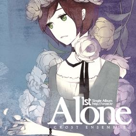
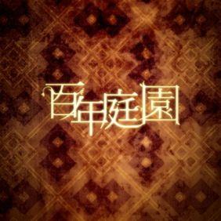

소개
안녕하세요, Hoho입니다.
Alone
 네이버 카페에서 결성되어 홍대 등지에서 다양한 OST 카피공연 활동을 해온 인디 사운드 유닛 [Crost Ensemble]가 첫번째 자작곡 싱글 앨범 《Alone》을
선보인다. 클래식 현악 전공생들과 실용음악 전공생들이 모여 만든 '크로스오버 사운드 동호회'라는 개성을 살려, 일반적인 홍대 인디밴드들과는 차별화 된 감성적인 현악 연주곡과
뉴에이지풍의 건반 연주곡을 수록했다. 타이틀 곡이자 유일한 보컬 곡인 은 에쿠니 카오리의 소설 '낙하하는 저녁'에 영감을 받아 만들어진 곡으로, [Crost
Ensemble]이 추구해 온 어쿠스틱 사운드와 작곡가의 감성 세계를 잘 담아내고 있다.
《Alone》에 수록된 3곡은 2008년 소량의 CD음반으로 출시되어 매진된 《Project C.A.S.H》앨범에 수록되었고, 2년 만에 재발매가 결정되어 디지털
싱글로서 처음으로 대중 앞에 선보이게 되었다.
OST 카피공연에서 OST 제작 및 음반 발매로 활동 범위를 넓혀가고 있는 [Crost Ensemble]은 뉴에이지를 포함한 다양한 장르의 자작곡 음반을 준비하고 있으며,
2010년 7월에 런칭하는 공식 홈페이지(http://crost.kr)에서 그 모습을 확인할 수 있다.
백년정원원
Crost Ensemble 1st Storytelling Project Album 이상향을 향한 새로운 부름 [백년정원 The Essential]. 클래식과 실용음악 각계 인디 아티스트들의 모임인 크로스트 앙상블이, 2010년 발매했던 첫 스토리텔링 앨범 [백년정원(百年庭園)]의 디지털 음반판 [백년정원 The Essential]을 발매한다. 약 2년간의 제작 기간을 거쳐 2010년 7월에 발매된 [백년정원(百年庭園)]은 '듣는 뮤지컬'을 표방하는 독특한 방식의 트랙 진행으로 많은 팬들에게 사랑을 받았고, 이번 2012년 말 앨범에서 가장 인기있었던 보컬곡들 위주로 재 선별해 디지털 앨범 형태로 태어나게 되었다. 음악을 사랑한다는 공통점 아래 모인 크로스트 앙상블의 젊은 아티스트들은 이번 앨범에서 클래식의 매력과 실용 음악의 개성을 한 데 모아 색다른 앨범을 만들고자 힘을 모았다. 뉴에이지, 록, 오페라, 일렉트로니카, 오케스트라 등 다양한 장르를 넘나드는 실험적인 시도 아래 20여명의 기획자와 작곡가들이 옴니버스 식으로 각자의 이야기를 담았으며, 크로스트 앙상블의 주축이 되는 크로스오버 현악 앙상블 'Aerial Lake'가 모든 트랙의 세션을 맡아 아름다운 선율을 연주해주었다. 홍대에서 활동하는 여러 인디 연주자들과 보컬들도 참여하여 완성도 있는 밴드 사운드를 담는데 힘썼다.
본 앨범의 이야기 속에 등장하는 '백년정원(百年庭園)'이란 인간이 끝없이 갈망하는 이상향에 대한 상징적 표현으로, 결국 우리가 애써 찾고 있는 이상은 가까운 우리 안에
존재함을 역설하는 키워드이다. 백년정원의 유래를 노래하는 뮤지컬 형식의 대서사시 "이교도왕" 시리즈, 전혀 다른 세계에서 만나게 된 두 남녀의 사랑을 그린 "새와 새의
이야기", 동화로 꾸며진 눈사람의 슬픈 이야기 "Snow Dream", 현실과 판타지의 경계를 넘나드는 "Monochrome"과 "Biela", 보낼 수 밖에 없었던 사랑을
노래한 "어제도 오늘도"와 "안개 속을 걷다" 등, 원작에서 총 34트랙에 걸쳐 거대한 스케일로 펼쳐진 내용을 이번 디지털 앨범에서는 인기 수록곡 위주로 11트랙에 요약해
담았다. 크로스트 앙상블은 현재 현악 앙상블 위주의 Aerial Lake가 중심이 되어 다양한 퓨전 장르에 대해 활동을 준비하고 있지만, 그외에도 많은 소속 아티스트들이
각자 활동을 이어나가고 있다. 백년정원은 현재 크로스트 앙상블이 걷고 있는 다소 전문적인 활동방향과는 달리 다채로운 아티스트들의 하모니를 보여주는 앨범이며, 거의 모든 소속
아티스트들을 만나볼 수 있는 드문 작품이라 볼 수 있다. 엄선된 12트랙의 베스트 앨범 격인 이번 디지털판 백년정원은 다양한 장르에 대한 청자의 요구를 만족시켜줄 작품으로
기대된다. 앞으로 이들의 새로운 도전과 행보에 주목해 보자.
언젠가
싱글 [언젠가]
클래식과 실용음악의 가교, 크로스오버 인디 그룹 크로스트 앙상블이 7년 만에 선보이는 "언젠가"는 2013년 학창 시절을 테마로 한 옴니버스 앨범
'REMINISCENCE'의 수록곡으로, 이루어질 수 없는 사랑을 담담히 정리하는 여학생의 이야기를 담았다.
크로스트 앙상블의 정체성인 클래식과 밴드의 장점을 절묘하게 혼합한 편곡에 SQUARE MUSIQ의 보컬 Sherie의 데뷔 시절 청아한 목소리에서 애절함을 느낄 수 있다.
-Credit-
작사: 린네 / 작곡: Roy C.
편곡: 린네, 겨울숲여우, 김봉민, Roy C.
보컬: Sherie / 코러스: Simon Young
Guitar: taredog / Violin: 박지민, 김지희
Viola: 이남곤, 임정민 / Cello: 김봉민
Recorded by 린네, 겨울숲여우, Roy C. @ Base Camp
Mixed by Roy C. @ Base Camp
Mastered by TMDC
코모레비
3인조 밴드로 구성된 코모레비 (木漏れ日) 는 '나뭇잎 사이로 새어드는 햇빛' 이라는 뜻을 가지고 있다.
장면이 눈앞에 그려지는 듯한 드라마틱한 전개로 기존에 보기 힘든 장르의 새로운 컨셉의 밴드이다.
코모레비의 첫 싱글 '별이 내린 나무' 는 순수하고 깨끗한 보컬과 강렬하면서 섬세한 스트링 사운드가 인상적인 곡으로 별이 쏟아지던 밤의 그리움을 노래한 곡이다.
별의 아름다움, 추억, 흔들리는 나무와 바람을 노래하며 안정감 있는 사운드에 특유의 감성을 녹아 내고 있다.
Ttack List
01. 별이 내린 나무 (A Starry Tree)
작사 / 린네 (Rinne)
작곡 / 린네 (Rinne)
편곡 / 코모레비
02. 별이 내린 나무 (A Starry Tree) (Inst.)
작곡 린네 (Rinne)
편곡 코모레비
Credit
String Arrange / 린네 (Rinne)
Piano / 린네 (Rinne)
Drum / 김지혜 (Kim Ji Hye)
Bass / 다나까
Mixing / 다나까
Mastering / 다나까
Art & Design by / 윤이나
연락처
이메일: example@email.com